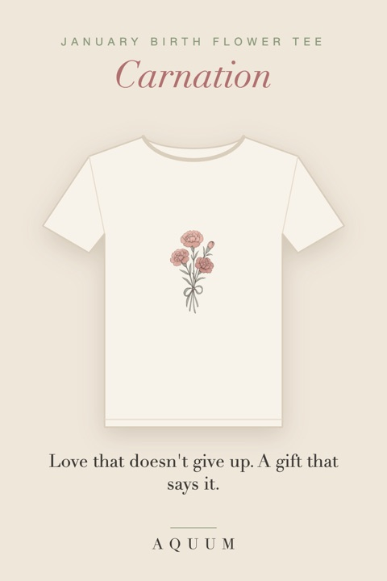

Birth Flower T-Shirts: A Botanical Tee for Every Month
2026-10-04
Written by the team behind Aquum, a small birth flower gift shop. How we make money.

A birth flower tee is a gift with a reason behind it. Every month has its own flower, and every flower has a meaning: January's carnation is love that doesn't give up, June's rose is love in all its forms, October's marigold is warmth that stays. The shirt carries that flower, drawn as a botanical watercolor illustration, so the gift says something before it is even unwrapped.
Find the month
Each tee is a soft cream unisex shirt (Bella+Canvas 3001, 100% cotton) printed to order with one flower. Pick the month of the person you are buying for:
- January · Carnation tee: love that doesn't give up. About the carnation.
- February · Violet tee: quiet loyalty and modesty. About the violet.
- March · Daffodil tee: new beginnings. About the daffodil.
- April · Daisy tee: innocence and uncomplicated joy. About the daisy.
- May · Lily of the Valley tee: the return of happiness. About the lily of the valley.
- June · Rose tee: love in all its forms. About the rose.
- July · Larkspur tee: an open heart and a strong bond. About the larkspur.
- August · Gladiolus tee: strength of character and integrity. About the gladiolus.
- September · Aster tee: wisdom and patience. About the aster.
- October · Marigold tee: warmth and love that stays. About the marigold.
- November · Chrysanthemum tee: honest friendship and good fortune. About the chrysanthemum.
- December · Paperwhite tee: renewal and good wishes. About the paperwhite.
Not sure which flower is theirs? The birth flower finder tells you from a birthday, and birth flowers by month has all twelve with their meanings. Some months have a second flower: see the second birth flowers.
Who they're for
- Birthdays. The shirt that matches the birth month, with a card that explains the flower. Birthday gift ideas by month.
- Moms and grandmas. Their flower, or a bouquet of the family's. See gifts for mom and gifts for grandma.
- Best friends and sisters. Choose the larkspur (an open heart) or the chrysanthemum (honest friendship). Gifts for best friends.
- Christmas and stocking stuffers. Birth flower Christmas gifts and small gifts under $15.
How they're made and shipped
Each tee is printed after you order it, so nothing sits in a warehouse. Production takes 3 to 10 business days, and shipping time depends on where you live; the estimate appears at checkout and tracking is included. Because every shirt is made to order, we can't accept returns for a change of mind or the wrong size: check the size guide on each listing, and message us if you're unsure. If something arrives damaged or misprinted, write within 14 days with a photo and it will be replaced.
For Christmas, order by mid-December.
Free printables to go with it
Wrap the gift with our free gift tags, add a birthday card, or write something with what to write in a birthday card.